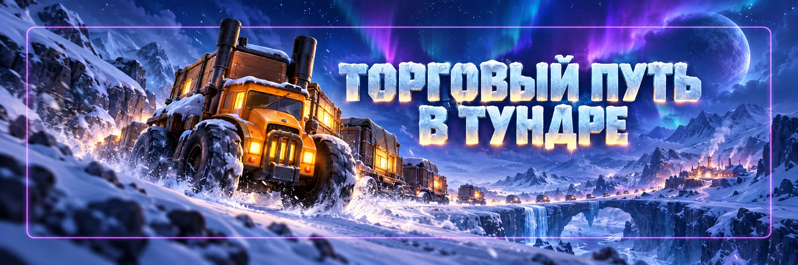

Торговый путь в тундре
Автор - Sova
«Торговый путь в тундре» — событие, в котором губернаторы отправляют грузовики с товарами, защищают свои конвои и совершают рейды на грузовики других игроков.
Здесь есть две задачи: сохранить как можно больше собственного груза и забирать действительно ценные награды у подходящих целей.
Главный принцип: важен не цвет грузовика, а ценность груза и вероятность его сохранить или успешно забрать.
Ежедневные лимиты
Обычно доступно:
- 4 отправки грузовиков в день.
- До 2 грузовиков одновременно в пути.
- До 4 успешных рейдов в день.
Поэтому каждую попытку лучше использовать осознанно.
Как работает доставка
Перед отправкой грузовика вы видите:
- качество грузовика;
- содержимое груза;
- героев сопровождения;
- возможную помощь союзника.
После отправки грузовик отправляется по маршруту. Если он успешно доходит до места назначения, вы получаете оставшийся груз. Но во время пути другие подходящие игроки могут попытаться его ограбить.
Качество грузовика
Чем выше качество грузовика, тем потенциально ценнее его груз.
Но есть обратная сторона: ценные грузовики привлекают больше рейдеров.
Поэтому максимальное качество не всегда означает максимальную выгоду. Иногда грузовик попроще с нужными вам материалами лучше, чем редкий груз, который с большой вероятностью разграбят.
Обновление грузовика
Для каждого нового грузовика первое обновление качества:
Следующие обновления используют:
Ваучеры грузовика
Ваучеры можно получать в «Сражении альянсов».
Если ваучеров не осталось, игра может предложить продолжить обновления за алмазы. Не нажимайте автоматически. Сначала посмотрите, насколько плох текущий груз.
Когда тратить алмазы
Алмазы оправданы только тогда, когда потенциальное улучшение действительно для вас ценно.
Например, если текущий груз состоит из обычных ресурсов, а вам нужны редкие материалы развития, дополнительное обновление может быть разумным.
Если же груз уже хороший: остановитесь.
Не превращайте один грузовик в алмазную воронку.
Смотрим не только на цвет
Перед отправкой задайте себе два вопроса:
1. Нужен ли мне этот груз?
2. Смогу ли я его нормально защитить?
Если ответ на оба вопроса «да» — отправляем.
Если красивый грузовик несёт предметы, которые сейчас вам почти не нужны, необязательно тратить ещё несколько ваучеров ради более высокого цвета.
Сопровождение
В отряде сопровождения можно использовать:
Один и тот же герой не может одновременно сопровождать несколько ваших грузовиков.
Поэтому если отправляются два грузовика сразу, сильнейших героев приходится распределять.
Как защищать ценный груз
На лучший грузовик ставьте более сильную боевую тройку.
Особенно если внутри находятся:
- редкие материалы;
- ценные фрагменты;
- материалы снаряжения;
- важные материалы развития.
На посредственный груз нет смысла отдавать весь лучший состав, если второй грузовик значительно ценнее.
Помощь союзников
Союзник может добавить вспомогательный отряд к вашему грузовику.
Но пригласить можно только игрока, который заранее выставил свой вспомогательный отряд в список помощи.
Поэтому сильным игрокам альянса полезно держать хорошие отряды помощи доступными для остальных.
Вспомогательный отряд
В нём также используется до:
Если нужный герой уже сопровождает другой грузовик, он может отсутствовать в доступном составе.
Поэтому при подготовке помощи проверяйте, где сейчас заняты ваши герои.
Сила грузовика может меняться
Защита грузовика не обязательно замораживается навсегда в момент отправки.
Если во время его движения вы улучшили характеристики, соответствующие изменения могут отразиться на отряде сопровождения.
Это касается и вспомогательного отряда.
Поэтому развитие аккаунта во время движения грузовика может повлиять на отображаемую силу защиты.
Когда отправлять ценный груз
Если ваш самый дорогой груз постоянно грабят, попробуйте изменить время отправки.
Практическая стратегия: не отправлять самые ценные грузовики точно в часы максимального онлайна.
Чем больше игроков одновременно просматривают цели для рейда, тем выше шанс, что заметят именно дорогой груз.
Это не гарантия защиты, но может снизить риск.
Рейды
Вы можете атаковать грузовики других подходящих игроков.
Союзники вашего альянса в список доступных целей не входят.
Перед атакой проверяйте:
- груз;
- героев сопровождения;
- союзную помощь;
- силу защиты;
- свои шансы на победу.
Как выбирать цель
Не ищите автоматически самый редкий грузовик.
полезный груз + противник, которого вы реально можете победить.
Например, редкий груз с отличными материалами, но огромной защитой может быть хуже, чем чуть менее редкий груз с нужным вам предметом и хорошим шансом победить.
Что обычно ценнее
При выборе рейда чаще выгоднее обращать внимание на редкие материалы развития.
Например:
- фрагменты героев;
- материалы экипировки;
- материалы губернатора;
- материалы питомцев;
- редкие материалы развития.
Обычные ресурсы обычно легче получить другими способами.
Но приоритет всегда зависит от того, чего не хватает именно вашему аккаунту.
Неудачный рейд
По актуальной механике неудачная атака обычно не расходует одну из четырёх успешных дневных попыток.
Но на повторную атаку той же цели появляется время ожидания.
Поэтому провал не обязательно означает потерю дневного рейда.
Однако постоянно атаковать заведомо более сильный грузовик всё равно бессмысленно.
Повторные ограбления
Один грузовик может быть успешно ограблен ограниченное число раз.
После:
он становится недоступным для дальнейшего ограбления.
Это относится и к вашим грузовикам.
Поэтому если ценный конвой уже пережил два успешных нападения, дополнительного рейда на него быть не должно.
Проверяйте цель перед атакой
Не ориентируйтесь только на большую цифру силы.
Посмотрите:
- состав героев;
- наличие помощи союзника;
- груз;
- насколько ценен конкретный предмет;
- не слишком ли рискован бой.
Если шанс победы сомнительный, лучше обновить список целей и найти более выгодный вариант.
Связь со «Сражением альянсов»
Эти два события тесно связаны.
В «Сражении альянсов» можно получать:
Ваучеры грузовика
А действия на Торговом пути могут приносить очки соответствующих этапов «Сражения альянсов».
Поэтому перед отправкой или рейдом полезно проверить, какой этап «Сражения альянсов» идёт сейчас.
Иногда один рейд или отправка одновременно дают награду сразу в двух событиях.
Ронне
В 2026 году в игру была добавлена Ронне.
Это Эксперт, специально связанный с «Торговым путём в тундре».
Её навыки направлены на улучшение эффективности грузовиков, обновлений, рейдов и сохранности груза.
Если Ронне уже открыта в вашем государстве, перед ежедневными отправками обязательно проверяйте её активные навыки.
Для 58 государства конкретные уровни и значения навыков на этой странице не фиксируем. Они зависят от доступности и прокачки Эксперта.
Нужно ли качать Ронне
Ронне очень полезна именно для этого события.
Но она узкоспециализированная.
Если ресурсов Экспертов мало, сравнивайте её с теми Экспертами, которые дают пользу строительству, исследованиям, другим основным событиям и ежедневному развитию.
Поэтому вкладываться в Ронне нужно исходя из того, насколько важен для вас Торговый путь.
Что делать с самым ценным грузовиком
- Проверить груз.
- Использовать бесплатное обновление.
- При необходимости использовать ваучеры.
- Поставить сильную тройку героев.
- Попросить сильного союзника о помощи.
- Выбрать разумное время отправки.
- Отправить.
Не отправляйте лучший груз случайным слабым составом только потому, что хотите быстрее закрыть ежедневные попытки.
Что делать с рейдами
- Посмотреть груз.
- Проверить защиту.
- Оценить шанс победы.
- Сравнить с другими доступными целями.
- Атаковать лучший вариант.
Не торопитесь использовать все рейды на первые четыре грузовика, которые показала игра.
Что делать участнику
- Каждый день использовать доступные отправки.
- Не забывать бесплатное обновление.
- Сначала использовать Ваучеры грузовика.
- Проверять груз до траты алмазов.
- На лучший груз ставить сильную защиту.
- Просить союзную помощь на действительно ценный груз.
- Выбирать для рейда полезную и посильную цель.
- Проверять «Сражение альянсов» перед действиями.
- Если открыта Ронне, учитывать её навыки.
Что полезно делать альянсу
- Сильным игрокам выставлять вспомогательные отряды.
- Помогать защищать самые ценные грузовики союзников.
- Напоминать участникам использовать ежедневные рейды.
- Во время «Сражения альянсов» координировать связанные задания.
- Не заставлять игроков тратить алмазы только ради цвета грузовика.
Частые ошибки
- Смотреть только на редкость грузовика.
- Обновлять хороший груз до тех пор, пока не закончатся ваучеры.
- Тратить много алмазов без оценки награды.
- Ставить слабую защиту на самый ценный груз.
- Забывать выставить вспомогательный отряд.
- Использовать одних и тех же героев сразу на двух грузовиках.
- Атаковать самый дорогой груз независимо от силы защиты.
- Тратить рейды на обычные ресурсы, когда доступны более полезные материалы.
- Забывать про связь со «Сражением альянсов».
- Игнорировать Ронне, если она уже доступна и прокачана.
До 4 отправок в день.
2 Одновременно в пути может быть 2 грузовика.
До 4 успешных рейдов.
Первое обновление каждого грузовика бесплатно.
Дальше используем Ваучеры грузовика.
В сопровождении до 3 героев.
На ценный груз просим помощь союзника.
Союзников рейдить нельзя.
2 После двух успешных ограблений грузовик больше не является целью.
Выбираем рейд по ценности груза и шансу победы, а не только по цвету.
Если доступна Ронне, используем её преимущества.
Главный принцип:
лучший грузовик не тот, у которого самый яркий цвет, а тот, с которого вы реально получите нужные вам награды.